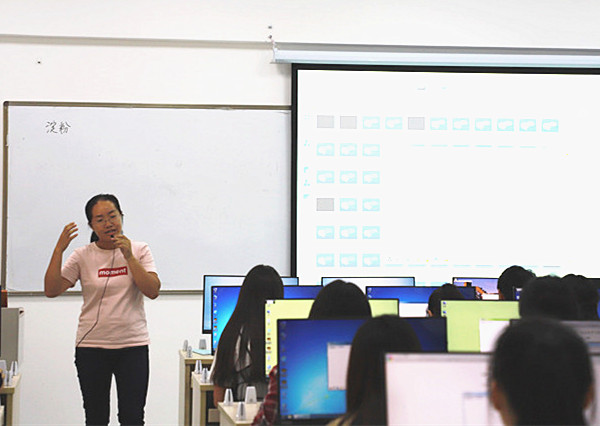

“每月一讲”——徐银老师在线教学示范圆满结束
9月27日下午，“每月一讲”学校公开课在S－A301如期举行。本次公开课由教育教学督导处和茶与食品科技学院共同举办，开课教师为茶与食品科技学院的徐银老师，讲授内容为《食品化学》第三章第三节的内容——淀粉。
整堂课徐银老师通过易测App上的“食品化学在线试题库”布置课前预习、课后作业、测试等环节；课堂讲授全程运用了“极域电子教室”平台，考勤更便捷，讨论、抢答、随堂测试与分析评讲逐一完成；引导学生积极体验在线学习的快乐，通过生活实例、视频等使抽象的知识点形象化，培养学生的专业情感，突出重点和难点。学生随堂听课效果颇佳，听课教师一致好评。
教育教育督导处举办“每月一讲”活动，旨在展示一线教师的教学风采，展示信息技术在教学中的科学应用技巧，让更多的年青教师从中收益，快速成长。
